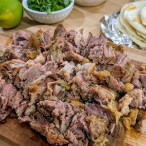

Meat for Tacos

My favorite way to make beef tacos
The meat is the foundation of the taco. The only way to a world class taco is to start
with world class meat. It doesn't take a lot but that is all the more reason to makes
sure that the meat that you do use is very flavorful and fresh.
I use this recipe when I have taken the time to think ahead and have the time. It is a
slow cooker type of recipe but I think it is absolutely superb.
Ingredients
- 3 lb of something fatty like brisket or beef cheeks
- 1 tbsp olive oil
- 3 tbsp salt
- 2 tsp Cumin
- ground black pepper to taste
- 2 cups of water
- 1/2 yellow onion
- 3 cloves of fresh garlic, chopped
Steps
- Mix the salt, cumin and pepper in a small bowl.
- Remove any access moisture from the meat and coat with the olive oil. Rub the spices into
the meat making sure to coat the entire surface.
- Place the meat in a bowl and refrigerate overnight or at least 4-5 hours.
- Add the onions and garlic to your meat and wrap everything in foil. Try to fold up the edges so
that the juices don't leak out. You will form a kind of tinfoil package.
- Add the two cups of water to a crock-pot and then place the package in the crock-pot.
- Cook on low for around 10-11 hours. Add more water if it looks like it is running low.
- Remove the foil package and shred or cut the meat into small bits. Enjoy!